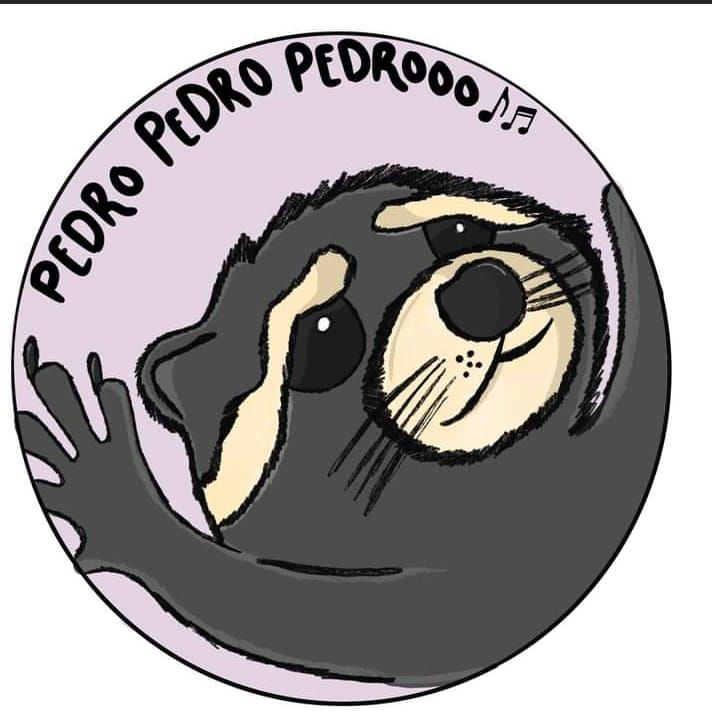

Список объектов всемирного наследия ЮНЕСКО в Беларуси
Беларусь в ЮНЕСКО
Беларусь вошла в состав ЮНЕСКО в 1954 году и на протяжении
многих лет поддерживает с этой международной организацией плодотворные, динамичные отношения. С помощью ЮНЕСКО в
нашей стране реализуется множество интересных проектов в сфере образования, науки, информации, коммуникаций и, безусловно, культуры.
науки и культуры, включающее достопримечательности в список Всемирного наследия.
Беловежская пуща
Первым в списке ЮНЕСКЕО в 1992 году стал Национальный парк
"Беловежская пуща" (объект природного наследия) – уникальный заповедный лес Европы, охраняемый еще с XIV века.
Беловежская пуща не имеет себе равных в Европе. Например, в первозданных зарослях обитает самая крупная в мире популяция зубров. Здесь нашли приют волки и рыси, благородные олени и косули, кабаны и барсуки,
чёрные аисты и орланы-белохвосты. Многие представители флоры и фауны Беловежской пущи занесены в Красную Книгу Республики Беларусь.
Дуга Струве
Всемирно известное геодезическое сооружение
– Дуга Струве – соединяло 265 пунктов в 10 странах мира: Норвегии, Швеции, Финляндии, России, Эстонии, Литве, Латвии,
Беларуси, Украине и Молдове. По историческим данным, в Беларуси было 34 пункта: 20 сохранилось,
а пять из них, оборудованные специальными знаками, вошли в Список всемирного наследия ЮНЕСКО.
- Объекты, представленные в предварительный список Всемирного наследия ЮНЕСКО:
- Августовский канал (2004)
- Спасо-Преображенская церковь и Софийский собор в Полоцке (2004)
- Борисоглебская (Коложская) церковь в Гродно (2004)
- Культовые сооружения оборонного типа в Беларуси, Польше и Литве (2004)
- Деревянные церкви Полесья (2004)
- Всемирное нематериальное культурное наследие ЮНЕСКО в Беларуси
- Белорусский обряд "Колядные цари"
- Белорусский весенний обряд "Юрьевский хоровод"
- Будславский фест
- Культура бортничества Беларуси и Польши
- Соломоплетение Беларуси
- Удостоены награды ЮНЕСКО:
- Большой театр оперы и балета
- Игорь Лучёнок
- Валентин Елизарев
список всемирного наследия ЮНЕСКО в Беларуси
| Наименования |
| Название |
Местоположение |
Время создания |
Время внесения |
| Беловежская пуща |
Ближайший город: Каменец
Область: Брестская |
— |
1979, 1992, 2014 годы |
Мирский замок |
Городской посёлок: Мир
Область: Гродненская |
XVI—XVII вв. |
2000 год |
| Несвижский замок |
Город: Несвиж
Область: Минская |
XVI в. |
2005 год |

Танцующий енот — мем с круглым видео, в котором животное трясет лапками и вертится. Вероятно, перед камерой его держит человек, которого не видно в кадре. Енота сопровождает подпись, объясняющая его позитивное настроение.
Первое русскоязычные видео с енотом загрузили в «Тикток» в начале марта 2024 года. На нем енот танцует, показывая свое отношение к наличию в машине сабвуфера. Ролик собрал почти 1 млн просмотров.
Идею подхватили другие пользователи и стали использовать видео с танцующим енотом, чтобы показать радость от прослушивания музыки в машине и дома. Так появился тренд о хорошем аудиооборудовании.
Грустный хомяк, он же Sad Hamster, — популярный мем. Это может быть картинка или видеоролик с изображением хомяка с огромными печальными, полными слез глазами.
На видео с грызуном играет грустная фоновая музыка, придающая ситуации еще больше трагичности.
Самые популярные мемы